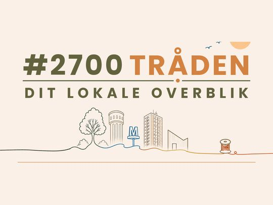

Leder #1: Vi leder stadig
Leder #1: Vi leder stadig
”Vi” er måske så meget sagt; det klinger bare mere tjekket. Men her er ”vi” altså – dit nye lokale overblik: 2700Tråden (måske med et hashtag foran – det diskuterer ”vi” stadig).
Vi har i et halvt års tid ledt efter formatet – og vi leder fortsat. Måske har du set os lede? Vi har nemlig lagt vores daglige overblik ud på forskellige lokale Facebook-sider siden juni. Måske har du set os på Instagram under Brønshøj Memes og 2700traaden?
Hvad vi leder efter, ved vi godt: flere forbindelser og mere fællesskab. Det går nemlig igen, når undersøgelser spørger, hvad vi ønsker os i 2700.
Men hvilket fællesskab er det, hvem skal forbinde sig til hvor? Informationsstrømmen på sociale medier er overvældende, og strømmen fra de fysiske lokalaviser er udtørret.
Det er her imellem, vi forestiller os at komme ind i billedet. Med bl.a.:
- Guides til bydelen – til efterårsferien, indkøb efter kl. 22, legepladser eller restauranter i Husum.
- Ugentlige overblik, der sorterer i dagsordener og referater fra rådhus, lokaludvalg og sportens verden, så du hurtigt er opdateret – med mulighed for videre læsning.
- Din nye fælleskalender, der viser de mange fede aktiviteter i 2700.
Og nu også med:
- En online kunsthal, hvor lokale kunstnere og kunsthåndværkere kan udstille og sælge deres værker.
- Ugens Tilbud, hvor lokale butikker kan skrive ind med deres tilbud, for at hjælpe os selv med at støtte de lokale butikker. Ellers forsvinder de.
Vi vil være Tråden, der binder det mundrette ”Bellahøj-Brønshøj-Husum-Tingbjerg-og-faktisk-også-et-lille-hjørne-af-Utterslev” endnu tættere sammen. Hvad end det er butik og kunde – eller kommune og borger.
Men som du måske fornemmer, er vi ikke så meget et VI i virkeligheden. Og man kan ikke lave forbindelser og fællesskab alene.
Så følg lige med, ik? På Facebook, Instagram eller hjemmesiden. Man må godt bare være med på en kigger. Vi skal nok fange dig. Dem, vi taler med, påstår nemlig, at vi har manglet i ellers så skønne 2700 Zappa.
For at blive det helt store VI, vi drømmer om, har vi dog brug for din hjælp. Brug for, at du tipper os om de gode arrangementer, dine gode tilbud eller bare en god historie. Men vi har også brug for, at du følger os på sociale medier. Ellers bliver det umuligt at samle enderne … i de flere forbindelser og mere fællesskab.
Kh 2700Tråden – dit lokale overblik
Fortsættelse følger …